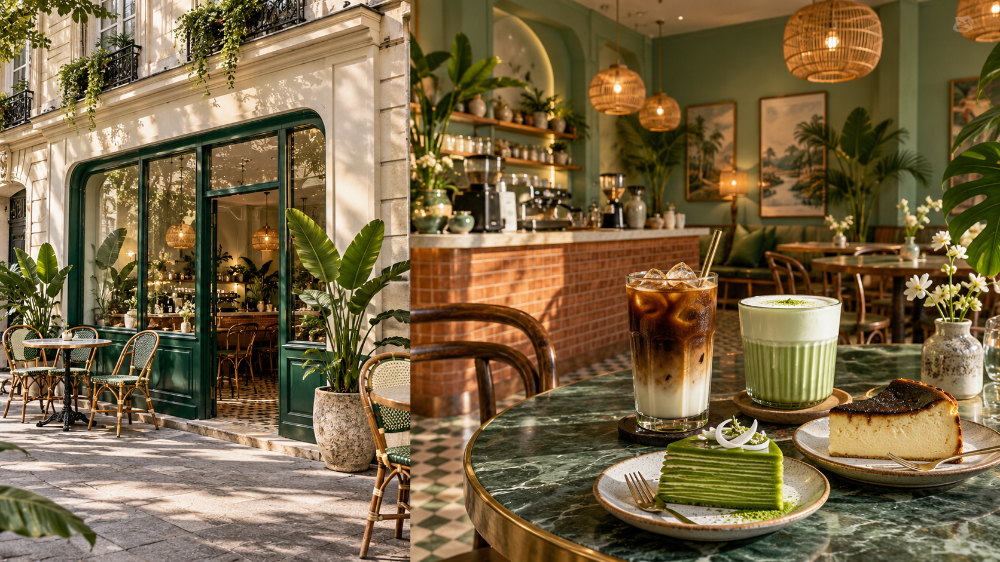

Cà phê sữa đá
Café vietnamien intense, lait concentré et glace.
Un café de famille entre deux cultures, des grains vietnamiens torréfiés à Paris et des douceurs inspirées.
Goûter le Vietnam
Caphette réunit le savoir-faire du café parisien et les souvenirs gourmands du Vietnam.
Adeline et Viet imaginent un lieu lumineux où le robusta de spécialité, torréfié localement, rencontre le pandan, le lait concentré et des pâtisseries maison.